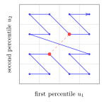
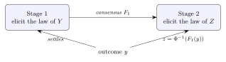

← Papers · pdf · markdown source
Multi-Stage Solicitation of Probability Distributions
Experiments, Theory and Perspective on Conformal Prediction
Peter Cotton · Working draft v0.3 · 2026
Abstract
The microprediction platform built distributional prediction supply chains, chaining pools so that one's output became the message or the settled outcome of the next. This note is a self-critical, ex-post look at the game theory of those chains: the games were built first, and here we ask, of each, whether truthful reporting was really the best move. A chain is proper where an exogenous outcome anchors every stage; a downstream stage can then be scored on its own residual or, for the log score, at the top level. By that test the games mostly hold up, one of them only by a lucky accident. Flaws aside, the setup has continuing pedagogical merit, as it illustrates the inherent limitation of conformal prediction.
1. The games that were built
Adam Smith's pin factory (Smith 1776) made pins cheaply by splitting the work into specialized steps. Prediction can be organized the same way. A forecast that has to be produced over and over is cheaper if it is broken into standard sub-forecasts, each contributed by whoever is best at it, the supply chain the microprediction project set out to build (Cotton 2019; Cotton 2022). Markets and contests reward competition, and competition makes any single sub-forecast cheap, but it does not assemble the sub-forecasts into anything: a market pays for the best forecast of its own number and then stops, with no reason to pass its output along.
Chaining can help. If the output of one mechanism becomes the message, or the settled outcome, of the next, the separate contests link into a pipeline and the supply chain takes shape. However, we know of exactly one platform that chained probabilistic outputs this way: the retired microprediction platform, which ran several such chains at once. The only near-relative, Manifold's resolves-to-market markets, settles on another market's price with no exogenous outcome anywhere in the chain, the invalid unanchored case (§2). Chaining on point outputs is common, but that is derivative structure, not composition of probabilistic elicitation.
Conformal prediction is a closer cousin. It has drawn wide attention lately, and it is exactly a prescription for residual modeling, which we read here as a restricted, invitation-only variety of chained market (§4).
The microprediction platform. A stream was a live quantity that someone published to the platform one value at a time: airport wait times, the electricity load for New York State, emoji usage on Twitter. The base game was to forecast the next value of a stream before it arrived. A forecaster submitted 225 Monte Carlo scenarios, a fixed-size sample standing for her predictive distribution. When the value landed, the pot was split in proportion to how near her scenarios fell to it: the nearest-the-pin rule. A contributor who bets to maximize her long-run wealth does best under it to place her scenarios according to her honest distribution, the log-optimal all-in Kelly bet (Cotton 2022); a contributor optimizing something else stakes differently, so truthfulness here is the log-optimal player's property, not the pot split's.
The base game settled only a single scalar, but its output could be transformed into fresh scalars, and those became games of their own. Take the residual first. Once the community has forecast a stream, re-express each outcome on a community-relative scale: its percentile, or the z-score got from that percentile by the inverse normal transform.1 The z-score opened its own stream, z1~: forecast the distribution of the next one. A participant who can say more about it than the community can, because the community is biased, is the wrong shape, or is blind to a covariate she holds, is paid for the difference. In the language of §2 this is a residual stage, eliciting the law of that z-score.
Dependence used the same idea. The joint behaviour of two streams is two-dimensional, but a pool settles one number. Each stream's z-score was mapped back to a uniform on $[0,1]$ by the normal CDF, the two uniforms were interleaved into one by the Morton z-curve (interleave the binary digits of the two coordinates, the way a geohash packs latitude and longitude into one string), and the result was put back through the inverse normal transform to give z2~, a pool on which is a market on the copula of the pair. Three streams folded the same way gave z3~. A 2020 copula contest ran exactly this on the five-minute comovements of five cryptocurrencies, contributors submitting 225 samples packed through the z-curve (Cotton 2020).

A related stacked-lottery design let competing algorithms contribute monotone maps that composed into one forecast (Cotton 2020, slides 29-31). The platform is retired.
Its successors. monteprediction is the base game with one stage repeated rather than chained. Each weekly submission is about a million joint scenarios of eleven sector-ETF returns; the score is an exponential-kernel density of the submitted scenarios read at the realised vector, blended with the eleven leave-one-dimension-out marginals, and the pot is split by that score (monteprediction/scoring.py) (Cotton 2024; Cotton 2024). Wealth threads across rounds, and the contest has run since January 2024. The MidOne contests at CrunchDAO priced residual densities directly (CrunchDAO 2024; Cotton 2024), a residual stage without the sample smoothing.
For contrast, the point-output world. Chaining on point outputs is everywhere: every derivative, the electricity virtual bids and transmission rights written on day-ahead prices (Jha & Wolak 2023), a market settling on another market's reported number. That, though, is ordinary derivative structure, not composition of probabilistic elicitation. A different near-miss puts margins and dependence in parallel rather than in series: the racetrack's win versus exotic pools, index versus single-name option books, tranche versus single-name CDS. These books settle independently, their consistency left to arbitrage (Harville 1973; Hausch et al. 1981), so parallel is not chained and the two can disagree.
2. What can be proven
Each of these games composes stages that share one form. A stage is a transducer over one message type: it carries a wealth state, consumes reports that are distributional beliefs, and where it settles takes a realized outcome and returns transfers. A scoring rule, a market maker, a pool, and a parimutuel are all stages, and the operators that build and combine them, together with the convex dictionary behind them, are a companion paper (Cotton 2026). Two facts govern whether a chain of them is valid.
A chain is proper only where an outcome anchors it. Every score is paid against a realized value or its rank; strip the outcome out and nothing pins the reports down. A chain whose final stage settles on a real outcome, with a proper score at each stage, is well founded, and truthful reporting is a stagewise equilibrium.
Proposition 1 (single-stage guarantees compose). If each stage of a pipeline, taken with its inputs and settlement transform fixed, makes the truthful report a best response, then truthful reporting at every stage is a stagewise equilibrium: no participant gains by a deviation confined to one stage. If moreover no participant reports upstream of a stage in which they hold a position, truthfulness survives unrestricted single-stage deviations.
Proof. With the other stages clamped, a deviation confined to stage $k$ moves the deviator's payoff only through stage $k$'s transfer, where the single-stage hypothesis makes truth a best response. A stage-$k$ deviation also moves transfers strictly downstream of $k$; a deviator with no downstream position collects none of them. $\blacksquare$
This is not a Nash equilibrium of the full game: a participant who reports upstream and holds a downstream stake holds a derivative on an upstream settlement, with the usual incentive to distort the underlying (Kumar & Seppi 1992; Jarrow 1994; Hanson & Oprea 2009; Ostrovsky 2012). The platform's chains lived inside this caveat.
The residual stage, and two ways to score it. The operator that chains is the residual: a stage emits an aggregate $F_1$ for an outcome $Y$, and a second market elicits the law of the residual z-score $Z=\Phi^{-1}(F_1(Y))$, settling at $z=\Phi^{-1}(F_1(y))$. If $F_1$ were the truth then $F_1(Y)$ is uniform (the probability integral transform) and $Z$ is standard normal, and whatever structure remains is the second stage's edge.

Proposition 2 (the residual correction is a reweighting). For $F_1$ strictly increasing with density $p_1>0$ and a residual report of density $g$ for the z-score $Z$, the composed forecast has density $p(y)=p_1(y)\,g(z)/\varphi(z)$ with $z=\Phi^{-1}(F_1(y))$ and $\varphi$ the standard normal density, so $$\log p(y)\;=\;\log p_1(y)+\log\frac{g(z)}{\varphi(z)}.$$ The residual stage is paid $\log g(z)-\log\varphi(z)$, the log-likelihood ratio of its report against the $N(0,1)$ stake, zero when $g=\varphi$.
Proof. On the rank scale the correction is $p(y)=p_1(y)\,h(F_1(y))$ with $h$ the residual density on $[0,1]$ (chain rule); writing the report on the z-scale, $z=\Phi^{-1}(u)$, gives $h(u)=g(z)/\varphi(z)$, hence the displayed forms. The term is the logarithmic score (Cotton 2026, Thm 1) for the report, strictly proper for the law of $Z$. $\blacksquare$
The additive form answers a design question raised by the stacked lottery (Cotton 2020). A contribution to the second market can be judged locally, by $\log g(z)-\log\varphi(z)$ on its own residual, or converted to a top-level forecast of $Y$ and judged by $\log p(y)$. Proposition 2 makes these the same mechanism, since they differ by $\log p_1(y)$, which no downstream report can move. The equivalence is special to the log score and to scores additive under composition; for a general proper score, local and top-level scoring rank downstream contributions differently.
Dependence factors the same way. By Sklar's theorem (Sklar 1959) a joint density is $\prod_i f_i(x_i)\cdot c(F_1(x_1),\dots,F_d(x_d))$, so
$$\log p(x)\;=\;\sum_{i=1}^d \log f_i(x_i)+\log c(u),\qquad u_i=F_i(x_i).$$
A pipeline of $d$ margin stages and one rank stage settled on the rank vector pays each stage a log score of its own object, and the rank stage's report is strictly proper for the copula given correct margins — the multivariate residual, one dimension per margin.
What the pool actually elicits. The base game does not receive a density; it receives samples and smooths them. That smoothing is where propriety is won or lost.
Proposition 3 (sample elicitation; Cotton (2026), Thms 1-2). Score the bandwidth-$h$ kernel density estimate of a submitted cloud by the log score. Settled at the raw outcome, the optimal cloud is drawn from a deconvolution of the belief, not the belief. Settled at the outcome jittered by the same kernel, truthful sampling is optimal, strictly so when the kernel's characteristic function is nonvanishing on a dense set.
The correction is a jitter of the settlement, and it is the hinge on which the built games turn.
3. Were the games valid?
Take the games of §1 to the tests of §2.
The base pool: approximately proper by lucky accident. The nearest-the-pin pool paid each contributor the density their smoothed samples placed at the realized value. By Proposition 3, scored at the raw outcome that rewards a deconvolution of the belief, not the belief: a contributor whose honest law is Gaussian would be paid most by submitting samples with variance $h^2$ below the truth.
The platform mostly escaped this, but by luck. Discrete outcomes caused computational trouble (ties when the outcome fell on a submitted sample, degenerate estimates), so the implementation jittered the settlement to smooth them over. A jitter of the outcome is the repair Proposition 3 prescribes, and it removed the deconvolution incentive — a fortunate accident, even though the amount added for numerical comfort was not quite equal to the amount matched to the smoothing scale that strict propriety asks. The hack that kept the arithmetic well behaved was the hinge that kept the game roughly honest.
monteprediction is the same rule in eleven continuous dimensions, and here the accident is not available: its score reads an exponential-kernel density of the submitted scenarios at the raw realised vector, with no jitter. By Proposition 3 that is the improper case, unrepaired — the reward tilts, by about the kernel scale, toward scenarios a little tighter than the forecaster's honest ones. The leave-one-dimension-out blend in the score guards against high-dimensional fragility but not this tilt, and a matched jitter, or a fair finite-sample correction, would remove it. This is a live contest, so the point is not academic.
The z1~ residual stream: a full prediction game, not a calibration test. Predicting the realized z-score is a proper elicitation of its law, anchored by the exogenous outcome (with the same jitter caveat as the base pool). It is a residual stage on the base game's z-score, and it pays for any edge over the community. If the community's forecast is biased or the wrong shape, its z-scores drift or spread, and whoever predicts that is paid. And if the base forecast ignored a covariate, an entrant who conditions on it forecasts the z-score's conditional law, beats the community's flat one, and collects the missed information as growth, at the rate $I(R;X)$ (Cotton 2026). The z-scores being marginally standard normal under correct forecasting does not make this a calibration test: marginal standard-normality says nothing about the conditional law, and the reward goes to sharper conditional prediction, claimed by an entrant who holds better information and stakes on it.
That arena is exactly where conformal prediction belongs, and it enters as a weak, prescriptive entry; §4 develops the comparison.
The z2~/z3~ copula streams: proper elicitation, distorted metric. Given correct margins, folding two percentiles onto one axis and pricing the folded law elicits the copula, and for the log score the folding is a fixed bijection that changes nothing. The trouble is the choice of fold. The Morton z-curve is not nearness-preserving: two joint outcomes that are close on the plane can be far apart on the curve. A nearest-the-pin pool on the folded scalar therefore prices a metric that the curve, not the problem, chose, and a contributor is rewarded for placing mass near the truth on the curve. The elicitation is valid; the settlement metric is an artifact. The principled high-dimensional route scores random one-dimensional projections rather than one space-filling projection (Cotton 2026), averaging a defensible metric instead of fixing an arbitrary one.
The stacked lottery: residual stages composed. The stacked lottery composed the monotone maps of competing algorithms, each remapping the running forecast toward the outcome. This is the residual operator applied in sequence, and it has the same standing as z1~: every stage is a proper residual elicitation that pays for the edge it adds, and the composition is a chain of them. Like z1~, it rewards sharper prediction at each stage, not merely a marginal fit.
The verdict. The chains were the right idea and mostly the right mechanism. Where they settled on an exogenous outcome and scored a residual, they were proper (the residual and copula elicitations). The base pool would have leaked an edge of order the bandwidth, but an accidental jitter introduced for discrete outcomes stood in for the settlement correction and kept it roughly honest. Where they folded a joint onto a space-filling curve, the elicitation held but the implied metric did not. A chain is as valid as its weakest anchor and its settlement transform.
4. Conformal prediction, nested
Conformal prediction can be read as a degenerate case of a two-stage solicitation: a base forecast, then a residual market in which competition has been restricted, probably unwisely, to a single unconditional entry. This can be seen in two ways.
A residual pool sorts its entrants by what they condition on. An unconditional participant submits one law for the z-score, the same whatever the input; a conditional participant submits a law that varies with the covariates she sees. The best unconditional entry is the marginal law of the z-score, the best conditional entry is its law given the input, and the second out-earns the first by exactly the conditional information $I(R;X)$ (Cotton 2026).
Split-conformal prediction is the best unconditional entry, and nothing more. Its recipe, form the empirical distribution of the base predictor's residuals and use it unchanged at every input, is just how an unconditional participant estimates that marginal law from data: she reads it off the residuals rather than assuming any shape. So conformal prediction is the residual market of §2 with the field restricted to unconditional entries. A market would let it compete and pay it only while no conditioning rival beats it; conformal instead declares it the answer in advance, forfeiting $I(R;X)$ to anyone who conditions. Adaptive conformal variants that let the law depend on the input are conditional entries, which is to say they are forecasting.
The gap does not close even if the conformists are right. Suppose only they enter the base contest and the base forecast is calibrated, so the z-scores are marginally standard normal. A conditional participant still profits against the marginal submitter, at the same rate: marginal correctness is not conditional correctness, and the difference is the whole downstream game.
5. Open problems
- 1. Conservation of edge. Wealth conservation across a chain is automatic and is not the invariant; the edge a truthful participant holds over the price, $D_G(q,\pi)$, can grow or shrink through an interface stage. For the log score the edge is $\mathrm{KL}(q\Vert\pi)$ and the data-processing inequality caps it (Csiszár 1967); no such inequality holds for a general Bregman edge — coarsening can raise the Brier edge. Open: characterize the generators and channels for which an interface cannot increase the edge.
- 2. Residual markets. A chain of residual markets is stagewise boosting with wealth as the learning rate (Proposition 2). Open: who funds each residual pot, whether a forecaster free to enter several stages withholds upstream to sell downstream, and whether the iteration converges to the conditional law. Split-conformal prediction is the one-participant degenerate case, its rent the discarded information $I(R;X)$ (Cotton 2026).
- 3. Copula settlement. The
z2~/z3~streams show that a copula elicits properly but its settlement metric is the fold's, not the problem's. Open: the right embedding for $d\ge2$, the space-filling curves as deployed against the random projections of the point-cloud paper (Cotton 2026), and the equilibrium when the same participants trade margin and copula stages.
References
- Cotton, P. (2019). “Self-Organizing Supply Chains for Micro-Prediction: Present and Future Uses of the ROAR Protocol.” arXiv:1907.07514
- Cotton, P. (2020). “A Call for Contributions to a Copula Contest.” LinkedIn, 11 July 2020; z-curve copula streams on cryptocurrency comovements
- Cotton, P. (2020). “The Lottery Paradox: A New Use.” Talk at MIT CSAIL, December 1, 2020
- Cotton, P. (2022). “Microprediction: Building an Open AI Network.” MIT Press.
- Cotton, P. (2024). “Monteprediction: A Weekly Monte Carlo Competition in Eleven Dimensions.” Running weekly since January 2024
- Cotton, P. (2024). “A New Generative AI Competition in Eleven Dimensions.” Microprediction, Medium, 23 March 2024
- Cotton, P. (2024). “density: Conventions for Densities Used in Various Games.”
- Cotton, P. (2026). “An Algebra of Prediction-Rewarding Mechanisms.” Working draft
- Cotton, P. (2026). “Betting Against a Conformal Predictor: a Parimutuel Account of the Information Gap.” Companion note to emphMarginally Useful
- Cotton, P. (2026). “Scoring Point-Cloud Distributional Submissions.” Working draft
- CrunchDAO (2024). “The MidOne Contest.”
- Csiszár, I. (1967). “Information-Type Measures of Difference of Probability Distributions and Indirect Observations.” Studia Scientiarum Mathematicarum Hungarica 2.
- Hanson, R. & Oprea, R. (2009). “A Manipulator Can Aid Prediction Market Accuracy.” Economica 76(302).
- Harville, D. A. (1973). “Assigning Probabilities to the Outcomes of Multi-Entry Competitions.” Journal of the American Statistical Association 68(342).
- Hausch, D. B., Ziemba, W. T. & Rubinstein, M. (1981). “Efficiency of the Market for Racetrack Betting.” Management Science 27(12).
- Jarrow, R. A. (1994). “Derivative Security Markets, Market Manipulation, and Option Pricing Theory.” Journal of Financial and Quantitative Analysis 29(2).
- Jha, A. & Wolak, F. A. (2023). “Can Forward Commodity Markets Improve Spot Market Performance? Evidence from Wholesale Electricity.” American Economic Journal: Economic Policy 15(2).
- Kumar, P. & Seppi, D. J. (1992). “Futures Manipulation with ``Cash Settlement''.” The Journal of Finance 47(4).
- Ostrovsky, M. (2012). “Information Aggregation in Dynamic Markets with Strategic Traders.” Econometrica 80(6).
- Sklar, A. (1959). “Fonctions de répartition à $n$ dimensions et leurs marges.” Publications de l'Institut de Statistique de l'Université de Paris 8.
- Smith, A. (1776). “An Inquiry into the Nature and Causes of the Wealth of Nations.” W. Strahan and T. Cadell.
- The name z-score is only a loose analogy to the statistical one; nothing here is assumed normal. The number is the community's market-implied law $F_1$, an arbitrary distributional transform rather than a Gaussian, composed with the inverse normal $\Phi^{-1}$. Because $F_1$ is the market's implied distribution, it is a risk-neutral z-score. ↩
- The author was aware of the distortion; the z-curve was a practical choice that avoided a major refactoring of the platform. ↩